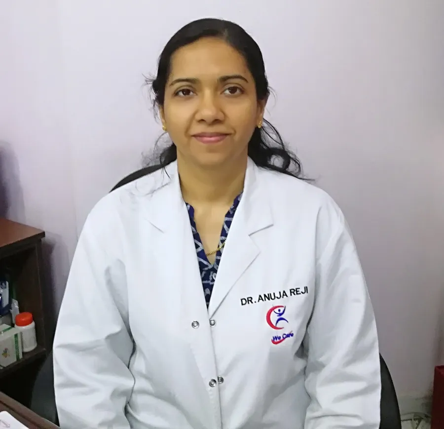

Dr (Mrs) Durraiya Kamal, M.B.B.S., M.D. (Paediatrics)
Dr Durraiya trained in India and came to the UAE in 1984. She founded this clinic at Baniyas Square, and it has looked after families in Dubai for over three decades.
She is a general practitioner with a special interest in children. In her clinic, babies and children get their routine health checks, growth and weight monitoring and vaccinations. She also does adult health check-ups and looks after people with long-term conditions.
Over the years the clinic has grown around her: specialists in internal medicine, women's health, ENT and urology, a physiotherapist, a radiographer for X-ray and ultrasound, and a dental centre. Many patients have relied on her and the team for years, and the relationship between patient and doctor is still what the clinic is built on.
30 years in internal medicine, 25 in India and 5 in the UAE. He was a professor and head of internal medicine at a government teaching hospital in Tamil Nadu, with ICU, CCU, toxicology and infectious-disease experience. Runs the diabetes, blood pressure and cholesterol clinics.
Dr Rekha Harshkumar Jaiswal
MBBS, MD (Obstetrics & Gynaecology)
Screening, antenatal, prenatal and postnatal care, and treatment of gynaecological conditions.
Dr S.K. Biradar
M.B.B.S., M.S., M.Ch (Urology)
Over 35 years' experience. Urology cases, and general minor surgery: suturing, foreign body removal, ingrown toenails and circumcision.

Dr (Mrs) Anuja Reji
M.B.B.S., DLO, DNB (ENT)
General practitioner in Dubai for over 8 years. ENT work including nasal endoscopy, audiometry, suction cleaning and foreign body removal, plus minor procedures: cauterisation, suturing and excision.
Dr Tecil Joy Analil
MBBS, General Physician
General practice. She is a UAE medical graduate.
Dental centre: Dr Arjumand Aakhtar, Dr Nausheer Mohd, Dr Pratik Tamakuwala and Dr Gyatri Mago (orthodontist).